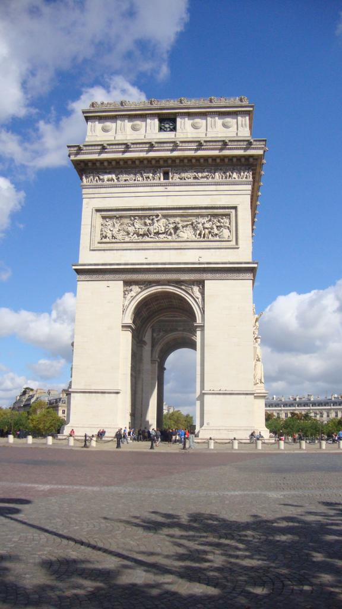
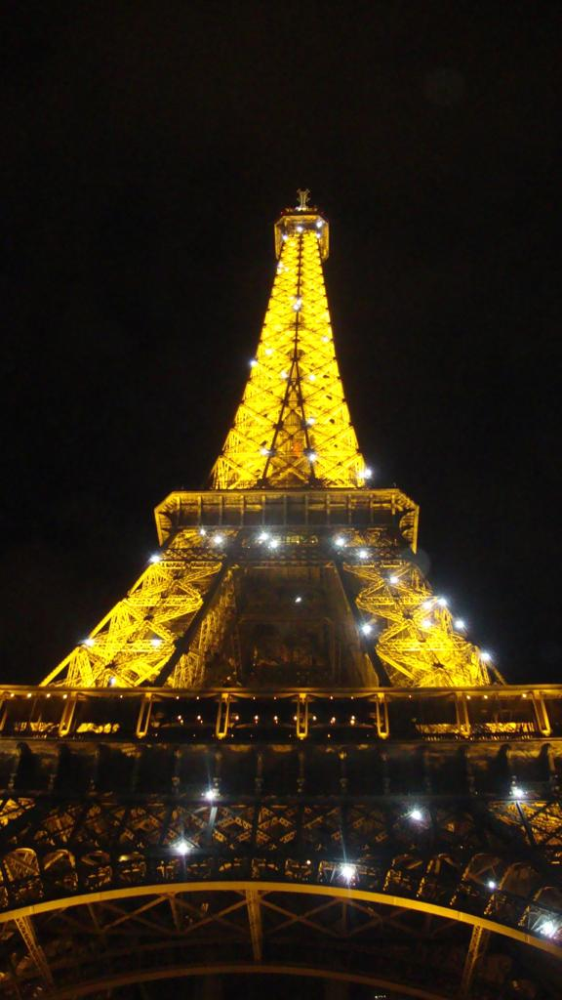
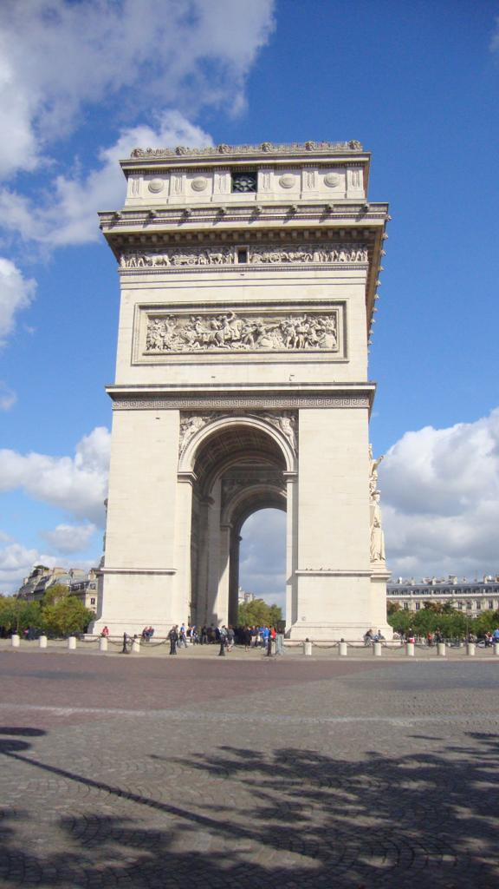
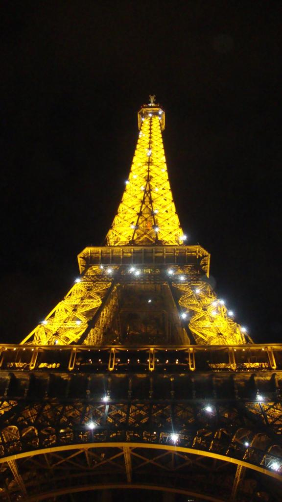

Why Paris?
Paris, the city of lights
Since the 17th century, Paris has been one of the world's major centres of finance, diplomacy, commerce, culture, fashion, and gastronomy. For its leading role in the arts and sciences, as well as its early and extensive system of street lighting, in the 19th century, it became known as the City of Light.
Paris is often referred to as a magical city due to its rich history, stunning architecture, world-renowned art and culture, and romantic ambiance. The city's iconic landmarks such as the Eiffel Tower, Notre-Dame Cathedral, and the Louvre Museum contribute to its enchanting reputation.
CAFÉS
My favourite cafés in Paris

Café De Flore
Located on the Seine’s picturesque left bank, this famous café in Paris was the place for literary meetings, philosophical debates and artistic daydreams. The flowers blooming over the Café de Flore sign makes it one of the most instagrammable spots in Paris.
Address:
172 Bd Saint-Germain, 75006 Paris, France
What I like about it
Start your day at Flore with a croissant au beurre, oeuf dur (hard boiled egg), jus d'orange, or chocolat special Flore.
Le Café Marly
Located under the arcades of the Louvre, it is the perfect meeting of a Parisian brasserie and a literary café where you can relax on the terrace and enjoy the view of the Louvre pyramid.
Address:
93 Rue de Rivoli, 75001 Paris, France
What I like about it
Café Marly’s menu offers French dishes cooked with quality products: the starters highlight seasonal vegetables while the main courses feature grilled meat and fish. For dessert, the indecent red fruit pavlova continues to turn heads!
Angelina
Hot-chocolate lover? On your next trip to Paris, you must try the Chocolat Chaud, one of the most famous cafés in Paris, located on Rue de Rivoli.
Address:
226 Rue de Rivoli, 75001 Paris France
What I like about it
Parisians wait in long queues to taste Angelina’s signature pastry Mont-Blanc and the famous hot chocolate which they claim is the best hot chocolate in the world!
Gallery
My photos from Paris
 


